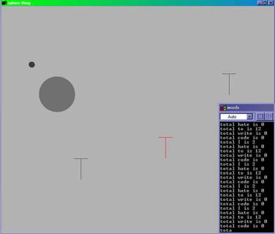
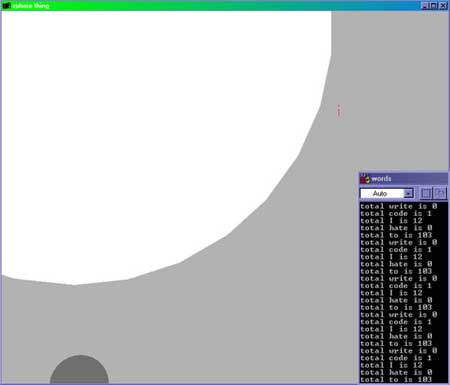

|
Instructions: To properly run my program, you must launch the executable using the unix shell, and then enter a filename into the shell window. You will then be asked 5 words to search for. Have fun. Statement: When useful information is sought after, it is often lost, caught behind the menacing, useless information that exists everywhere. There are tons of information bits and bytes out there that seem to get in the way, causing trouble for information that just wants to be found. It really does... Well now this useful information has a platform to grow, learn, adapt and be viewed, in captivity of course. My program begins by asking a user to input a file to search through. The user is then asked to input 5 words that he would like to look for in the file. These words (represented as spheres) will soon grow before us, and each develops its own unique habits. When the program begins, the user is submerged in an environment full of useless information. These bits of useless information (represented by individual letters from the searched file) are mapped on the screen, in a disorienting manner. As the spheres (important words) spawn, they are out of place, and visibly uncomfortable with their environment. After all, if you were a little word, in a massive environment filled with useless information, you would be pretty upset too. At this initial stage, the words lack presence, and confidence. With every touch of a useless letter, they flee to a safe area of the environment, only to be violated again and again. But as time passes, and their individual word counts grow, the spheres that represent them grow as well. Along with growing in size, they also grow in confidence, and are not as vigorously affected by the useless information that resides in the environment. In time, they are hardly affected at all, and they can possibly become the dominating forces in the environment. If this were to happen, they could immerse the entire screen with their presence. The results, of course, are all correlated to what the user is looking for, and what they are searching through. In many cases, it is uncertain what will happen, depending on the input of the user. Sometimes the words cease to exist in their overwhelming environment, and sometimes, just sometimes... these little words that could, ...do.
-Neeaaaal Desai


Download source code for the project 358Kb
|